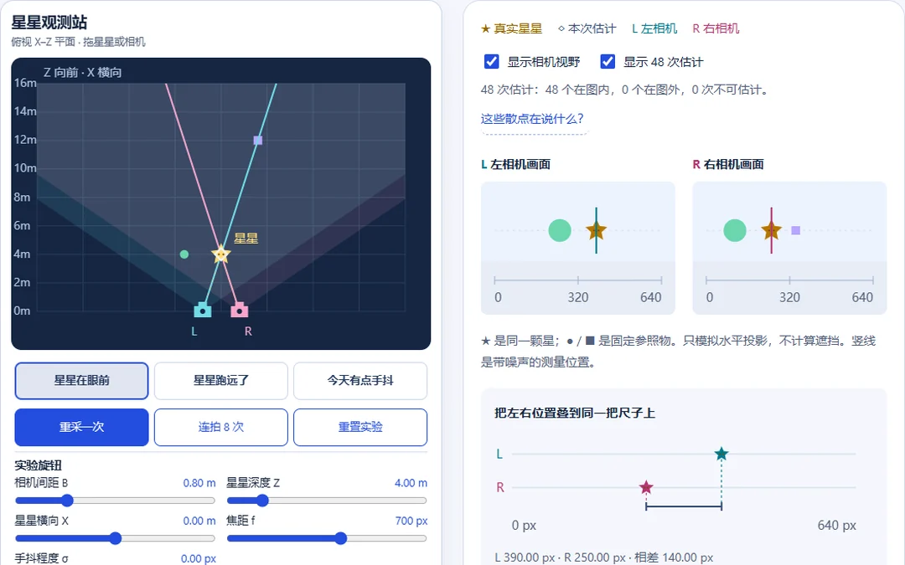
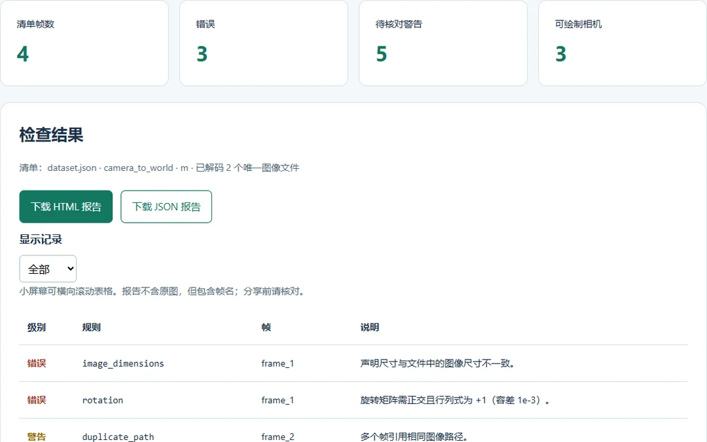
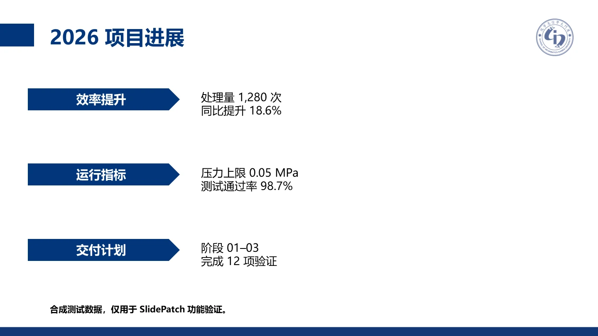
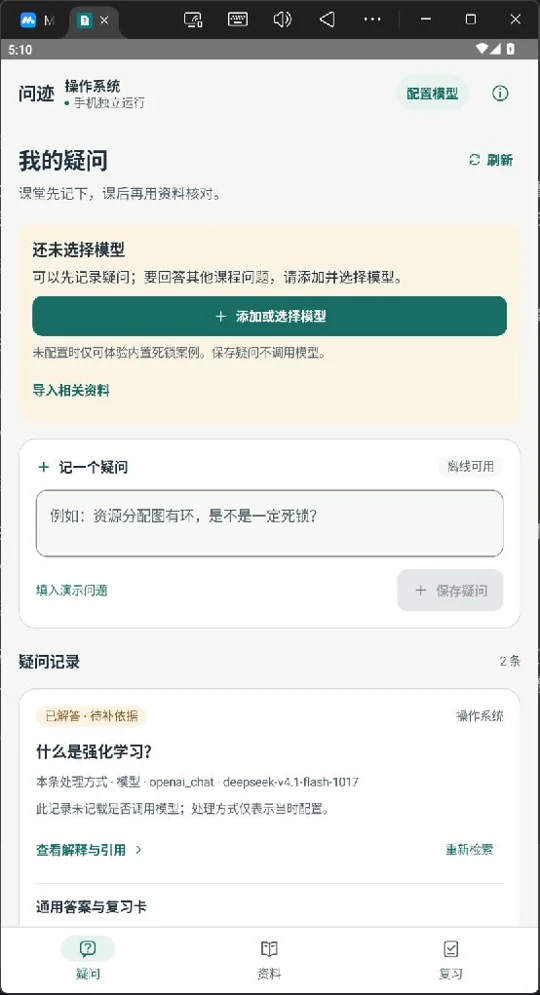

为什么？
能不能再试试？
我的专业是网络空间安全，好奇心也把我带向计算机视觉和世界模型。我想弄懂模型怎样从图像看出三维结构、从视频预测变化，也关注能调用工具的 AI 怎样安全地行动。在国家级大创“多模态三维重建与理解”中，我负责数据采集与预处理，让研究从可用的数据开始。
1/40 专业排名3.94/4 GPA
专业排名截至大二结束。
HELLO WORLD, HELLO YOU.
在厦大读书、写代码，也写一点故事。
会钻进三维世界，也会在操场上接过下一棒。
欢迎打开我的人生其他标签页。
厦门大学 · 2024 级网络空间安全 · Yueqi Chen
A FEW OPEN TABS
这些标签页，我都想认真打开。
我的专业是网络空间安全，好奇心也把我带向计算机视觉和世界模型。我想弄懂模型怎样从图像看出三维结构、从视频预测变化，也关注能调用工具的 AI 怎样安全地行动。在国家级大创“多模态三维重建与理解”中，我负责数据采集与预处理，让研究从可用的数据开始。
专业排名截至大二结束。
有一篇 CVPR 2027 在投。
敬请期待……
结果未定，好奇心照常营业。
做过团支书，也担任班长、科创部部长。组织活动、反映同学需求，认真接住集体里的那些小事。
400+小时
累计志愿服务，让“参与”变成日常。
厦门大学志愿服务金木棉奖章个人
校运会女子铅球，从第 59 届第五名，到第 60 届第二名。接力赛里，也留下了和伙伴们一起冲向终点的记忆。
“厦大，我想对你说”征文被收录进《凤凰花开的日子》主题征文集，学习笔记获得校级“最美学习笔记”三等奖。
代码之外，也想用文字和排版，留住校园的片刻与思考的过程。
翻翻文字副本参与暑期社会实践，获评厦门大学“暑期社会实践积极分子”。走出课堂，也是在学习怎样把眼前的事情做好。
我希望自己的认真，不只留在纸面和代码里，也能落在具体的行动中。
看看我的实践故事MADE WITH CURIOSITY
写代码的快乐之一：一个小麻烦，真的可以变成一个小工具。
一团噪声怎么变成有规律的图案？相机明明回到了原地，为什么中途的路还会跟着变？我把这类问题做成能点、能拖、能对照的图文实验，想邀请你先猜一下，再亲手验证。
我也把网安专业里让我好奇的问题搬了进来。网页等了两秒，时间都花在哪？云端看不到原始数据，能不能帮忙算出结果？一个能读网页的 AI，凭什么替你点「发送」？你可以亲手读瀑布图、试算密文，再顺着时间线看看常见攻击和防护是怎么一路变到今天的。还可以给两个 AI 助手的权限策略做一次对照，看看谁拦住了越权、谁把正常请求也挡在了门外。
如果你还想追问，可以沿着实验读应用和论文，也可以拿着页面里的研究练习做一次自己的对照。我希望这些小实验能帮更多人看懂原理，也敢从一个问题开始做科研。

模型里面，到底发生了什么？
给机器学习初学者的 28 个交互实验。选一块图案、改一个参数，跟着画面追踪变化。从文字怎样分词，到模型怎样学习，一点点建立自己的理解。

为什么离得越远，越难看准？
把星星拖远，再把两台相机分开，看看左右画面与深度读数怎样变化。三个小挑战，带你亲手发现双目视觉里的门道。

让实验绕远路的，会是一个错尺寸吗？
打开故意放入异常的示例报告，找找不合适的图像尺寸和相机参数。再给自己的数据做次体检，了解重建实验开始前要准备什么。

一张照片，除了画面还带着什么？
先用合成样例试试，看看报告里能找出哪些隐私线索。认识照片 GPS 和文档中的敏感信息，也学会在发布前给自己的文件做一次本地检查。
多视角数据体检和「公开之前」都提供合成样例，读者也可以用自己的文件在本机检查。各项目的运行方式、示例来源和适用范围见项目说明。

同一份内容，两种样子。

我：这个项目用 pnpm。
换一个会话之后……项目记忆：这条约定，我记着。
为 DeepSeek Harness 保存工作区约定、决策与偏好，让同一个项目的新会话接上上下文。
试读这张小纸条在他人的代码里学习，再把一小块改进交还给社区。有些修复已经被上游采纳。
修复 JSDoc 注释转换中的提前闭合问题，避免自动修复把合法 JavaScript 变成语法错误。
修复 SSH 配置的 Include 解析，让一条指令中的多个路径按顺序展开，并补充回归测试。
也在继续跟进 fsspec 和 PEtab 的缺陷修复。
截至 2026.11.21，这两条 PR 仍为 Open。
LIFE OUTSIDE THE EDITOR
全面发展这四个字，落在生活里，是一件件具体的小事。
第 59 届校运会，女子铅球第五名。
第 60 届，第二名。
接力跑、气排球、定向越野，也都是我的大学生活。一个人的成绩值得开心，一群人的投入同样让人记得。
参与“厦大，我想对你说”征文，作品被收录进《凤凰花开的日子》主题征文集。
学习笔记也拿过校级“最美学习笔记”三等奖。写清楚一个知识点，留下一段校园记忆，都让我觉得落笔值得。
担任团支书期间，所在支部获评校“五四红旗团支部”。后来担任班长、科创部部长，继续组织和协助班级、学院活动。
我喜欢“共同完成”这件事：让信息被听见，让需求有人回应，让同学们的点子有机会落地。
参与暑期社会实践，获评厦门大学“暑期社会实践积极分子”。从课堂走向实践，让我更愿意把“可以做什么”变成“现在就开始做”。
整理数据、维护文档、协调活动……我希望把同样的耐心带到实际工作里，把一件件具体的小事做完整。
LITTLE CHECKPOINTS
谢谢一起努力过的伙伴。这些节点，有很多人的参与。
2024—2025、2025—2026 学年
大学生创业计划竞赛
同年获福建省赛特等奖
高教社杯全国大学生数学建模竞赛 · 本科组
视觉智探 / 慧眼流析 / Super Story
认真学习，也认真生活。
所在支部获评校五四红旗团支部
个人荣誉 · 厦门大学
走出课堂，把热情落在行动里。
还有接力与团队项目的共同记忆
以及“厦大，我想对你说”主题征文收录
……